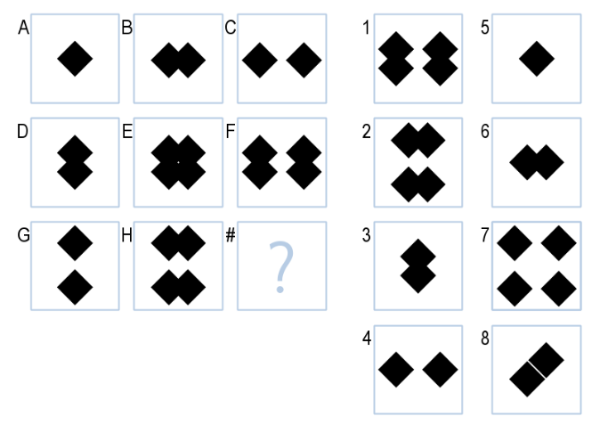

Education
Cal Poly S.L.O.
I studied Statistics at California Polytechnic State University (Cal Poly) San Luis Obispo from 2014-2018. During that time I took a wide variety of classes.
- I took an Introduction to Data Science course with Dr. Dennis Sun my last quarter of Cal Poly, which inspired me to continue on a path of predictive analytics.
- I took coursework in Biopsychology and Genetics which motivated me to work on a protocol trial for my senior project, where I investigated the effects of Neratinib on HER-2+ metastatic breast cancer.
- I took the Introduction to Computer Science course series, which motivated me persue my Master's in Computer Science

Georgia Tech
While working full-time, I have been studying at Georgia Institute of Technology's M.S. in Computer Science. There I have studied- Human Computer Interaction, with a primary focus on Don Norman's Principles of Human Centered Design
- Knowledge Based Artificial Inteligence, with a primary focus on teaching AI agents culminating in designing An agent to solve Raven's Progressive Matricies.
